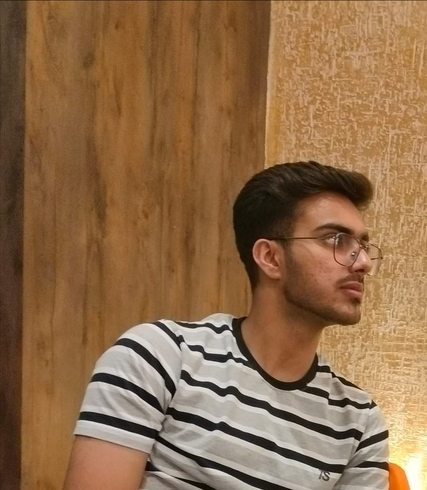

Aryan Shandilya
Hi there👋 I am Aryan Shandilya the creator of this project. This project takes inspiration from applications of Open CV. Although Open CV was never implemented in the making of this project due to technical limitations. I have used TensorFlow JS as it is faster compared to a server and client based Open CV implementation. I encourage you to tweak around with the project and contribute in it.